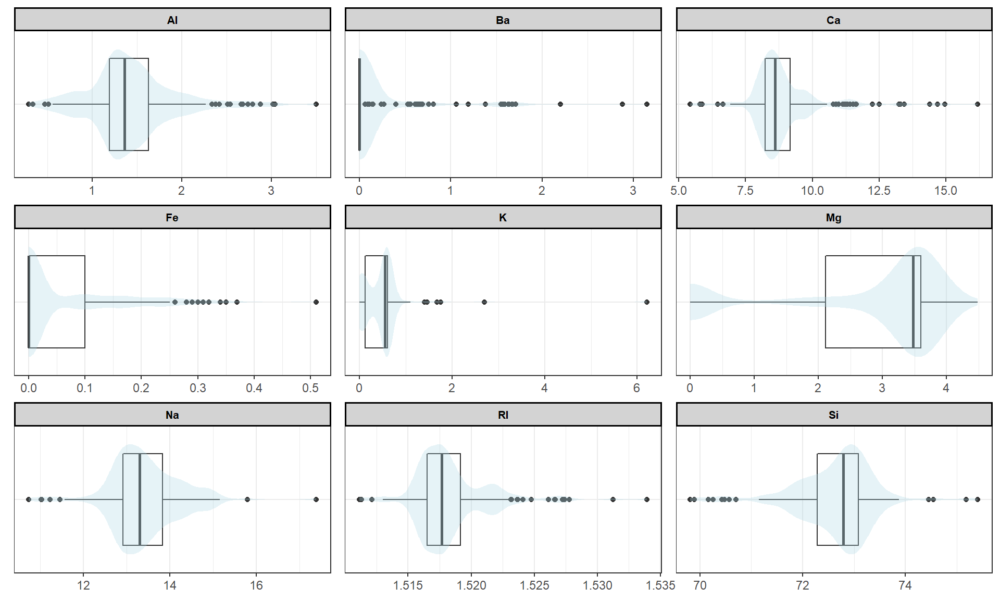
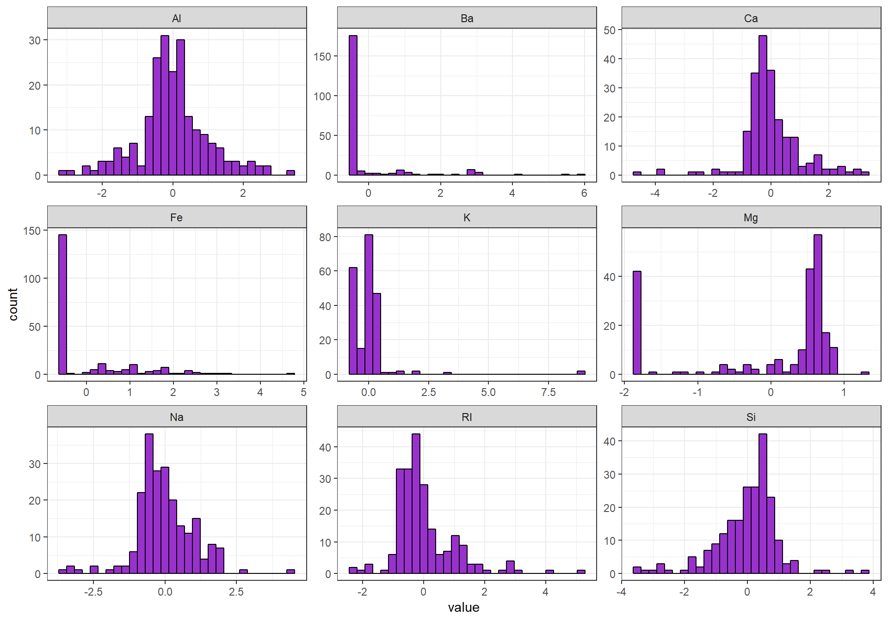
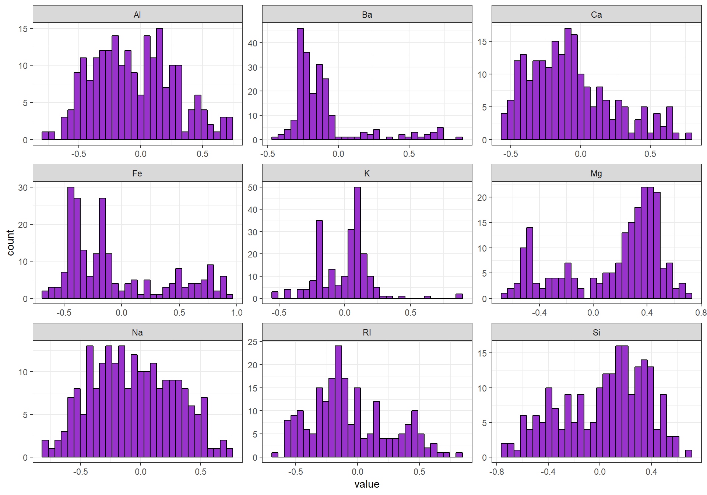
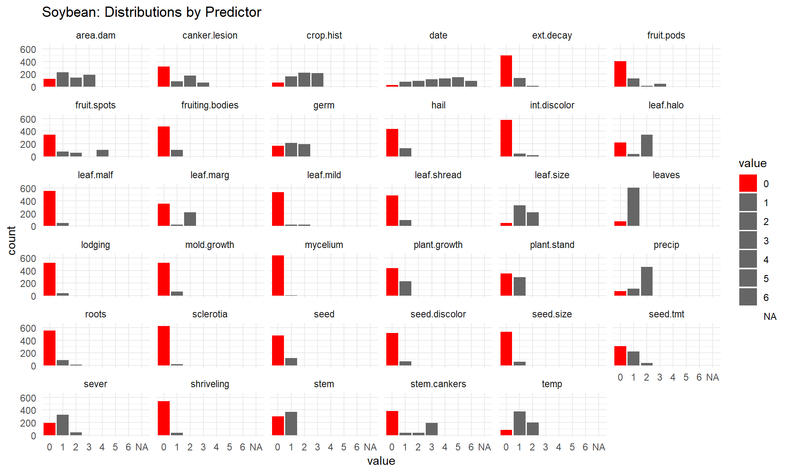

3 Assignment Three
- Kuhn & Johnson 3.1
- Kuhn & Johnson 3.2
3.1 Kuhn & Johnson 3.1
The UC Irvine Machine Learning Repository contains a data set related to glass identification. The data consist of 214 glass samples labeled as one of seven class categories. There are nine predictors, including the refractive index and percentages of eight elements: Na, Mg, Al, Si, K, Ca, Ba, and Fe.
3.1.1 a. Using visualizations, explore the predictor variables to understand their distributions as well as the relationships between predictors.
3.1.1.1 Descriptive Statistics
The output of the describe( ) function suggests some variables to take closer looks at. RI, Mg, K, Ca, Ba and Fe appear skewed; and RI, Na, Si, K , Ca, Ba, and (to a lesser extent) Fe exhibit some challenging tails (kurtosis != 3.0).
3.1.1.2 Skewness
We can also look at the skew of our numeric variables using the e1071 package:
skewer<-function(df){
new_skew = setNames(data.frame(matrix(ncol = 2, nrow = 0)), c("Element", "Skew"))
for(name in colnames(df)){
skew <-skewness(df[,name])
temp = data.frame(cbind('Element' =name, 'Skew' =skew))
new_skew <-rbind(new_skew, temp)}
return(new_skew)
}
skewer(Glass[, 1:9])%>%
kable("latex") %>%
kable_styling(latex_options = c("hold_position", "striped"))3.1.1.3 Distribution
Histograms visually illustrate the challenges with these distributions.
Glass %>% keep(is.numeric) %>% gather() %>% ggplot(aes(value)) + facet_wrap(~key,
scales = "free") + geom_histogram(fill = "darkorchid", color = "black") +
theme_bw()
3.1.1.4 Correlation
We used a corrplot to look at the correleations between numeric glass variables.
There is some significant positive correlation between Ca and RI; slightly less between Ba and Al, Ba and Na, and K and Al.
There are some obvious negative correlations between Si and RI, as well as Al and RI, Al and Mg, Ca and Mg, and Ba and Mg.

3.1.2 b. Do there appear to be any outliers in the data? Are any predictors skewed?
3.1.2.1 Boxplot
The long tails of some of the predictors visible in histograms are indicative of outliers. The plot below shows a boxplot and violin plot for each variable. Many of the variables appear to have outliers; Ba, Fe and K appear to have the most potential outliers. Handling these outliers will depend on a mix of reference data and statistical techniques.
Skewness is also visible in the histograms, Mg is bimodal. Ba, K and Fe are right skewed. The remaining variables don’t appear to be normally distributed - though they exhibit central tendency, there are signs that they are leptokurtic or platykurtic. This suggests exploring skew and possibly transformations might be of use down the line.
# boxplot with violin plot overlaid for all variables
Glass %>% keep(is.numeric) %>% gather() %>% group_by(key) %>% ggplot(data = .,
aes(x = "", y = value)) + geom_boxplot() + geom_violin(alpha = 0.3,
color = NA, fill = "lightblue") + labs(x = NULL, y = NULL) + theme_bw() +
theme(axis.ticks.y = element_blank()) + facet_wrap(~key, scales = "free",
ncol = 3) + coord_flip()
3.1.3 c. Are there any relevant transformations of one or more predictors that might improve the classification model?
Below we conduct a simple exploration of histograms for skewed distributions using BoxCoxTrans( ):
skews <- c("Mg", "Fe", "Ba", "Ca", "K")
# MASS::boxcox(Glass)
for (skw in skews) {
print(skw)
print(BoxCoxTrans(Glass[, skw]))
}FALSE [1] "Mg"
FALSE Box-Cox Transformation
FALSE
FALSE 214 data points used to estimate Lambda
FALSE
FALSE Input data summary:
FALSE Min. 1st Qu. Median Mean 3rd Qu. Max.
FALSE 0.000 2.115 3.480 2.685 3.600 4.490
FALSE
FALSE Lambda could not be estimated; no transformation is applied
FALSE
FALSE [1] "Fe"
FALSE Box-Cox Transformation
FALSE
FALSE 214 data points used to estimate Lambda
FALSE
FALSE Input data summary:
FALSE Min. 1st Qu. Median Mean 3rd Qu. Max.
FALSE 0.00000 0.00000 0.00000 0.05701 0.10000 0.51000
FALSE
FALSE Lambda could not be estimated; no transformation is applied
FALSE
FALSE [1] "Ba"
FALSE Box-Cox Transformation
FALSE
FALSE 214 data points used to estimate Lambda
FALSE
FALSE Input data summary:
FALSE Min. 1st Qu. Median Mean 3rd Qu. Max.
FALSE 0.000 0.000 0.000 0.175 0.000 3.150
FALSE
FALSE Lambda could not be estimated; no transformation is applied
FALSE
FALSE [1] "Ca"
FALSE Box-Cox Transformation
FALSE
FALSE 214 data points used to estimate Lambda
FALSE
FALSE Input data summary:
FALSE Min. 1st Qu. Median Mean 3rd Qu. Max.
FALSE 5.430 8.240 8.600 8.957 9.172 16.190
FALSE
FALSE Largest/Smallest: 2.98
FALSE Sample Skewness: 2.02
FALSE
FALSE Estimated Lambda: -1.1
FALSE
FALSE [1] "K"
FALSE Box-Cox Transformation
FALSE
FALSE 214 data points used to estimate Lambda
FALSE
FALSE Input data summary:
FALSE Min. 1st Qu. Median Mean 3rd Qu. Max.
FALSE 0.0000 0.1225 0.5550 0.4971 0.6100 6.2100
FALSE
FALSE Lambda could not be estimated; no transformation is appliedA simple log transformation shows improvements in the distribution of the iron variable Fe. However it does introduce outliers on the left; additionally, all the zero values of Fe go to -Inf and are not reflected at all in this distribution.
par(mfrow = c(1, 2))
hist(log(Glass$Fe), breaks = 30, col = "lightblue", main = "Distribution Fe With Log Transformation",
xlab = "Log-transformed Fe")
hist(Glass$Fe, breaks = 30, col = "gray", main = "Fe Without Log Transformation",
xlab = "Fe")
We then examined the first few rows of the data before and after transformations to see what changes the Box-Cox method suggests.
head(Glass) %>% kable(caption = "Glass (without transformations)",
digits = 2, "latex") %>% kable_styling(latex_options = c("hold_position",
"striped"))trans <- preProcess(Glass, method = c("center", "scale", "BoxCox"))
trans_glass <- predict(trans, Glass)
head(trans_glass) %>% kable(caption = "Glass (with transformations)",
digits = 2, "latex") %>% kable_styling(latex_options = c("hold_position",
"striped"))Finally, we looked at the histograms of our variables after automated application of the Box-Cox transformations.
trans_glass %>% keep(is.numeric) %>% gather() %>% ggplot(aes(value)) +
facet_wrap(~key, scales = "free") + geom_histogram(fill = "darkorchid",
color = "black") + theme_bw()
While the transformation produces marginal improvement in most of the variables the only one with noteworthy changes is Ca. Given the number of outliers and skew in this data, it might be useful to attempt a spatialSign() transformation.
trans <- preProcess(Glass, method = c("center", "scale", "spatialSign"))
trans_glass <- predict(trans, Glass)
trans_glass %>% keep(is.numeric) %>% gather() %>% ggplot(aes(value)) +
facet_wrap(~key, scales = "free") + geom_histogram(fill = "darkorchid",
color = "black") + theme_bw() Without Spatial Sign:
With Spatial Sign:
The spatial sign-transformed distributions are the most normal and best for modeling. While custom transformations of each variable might prove even better robust, the simple spatial sign grooming and pre-processing method seems practical and useful for this data set.
3.2 Kuhn & Johnson 3.2
The soybean data can also be found at the UC Irvine Machine Learning Repository. Data were collected to predict disease in 683 soybeans. The 35 predictors are mostly categorical and include information on the environmental conditions (e.g. temperature, precipitation) and plant conditions (e.g. left spots, mold growth). The outcome labels consist of 19 distinct classes.
3.2.1 a. Investigate the frequency distributions for the categorical predictors. Are any of the distributions degenerate in the ways discussed earlier in this chapter?
# Tidy dataset, removing non-numeric variables
Soybean %>% select(-Class) %>% gather() %>%
# Depict distribution of each class within categories
ggplot(aes(value, fill = value)) + geom_bar() +
# Code all 0 factor values as red for easier visual detection of
# degenerate distribution
scale_fill_manual(values = c("red", rep("grey40", 7))) +
# Facet plots by predictor and attenuate chart look
facet_wrap(~key) + theme_minimal() + labs(title = "Soybean: Distributions by Predictor")
Distributions are regarded as degenerate when they have a unique values with extremely low frequencies, i.e. ‘predictors with a single value for the vast majority of samples’. mycelium and sclerotica both fall into this category, and arguably leaf.mild, lodging, seed.discolor, seed.size, and shriveling could also be considered.
3.2.3 c. Develop a strategy for handling missing data, either by eliminating predictors or imputation.**
There is no simple method for handling missing data AND preserving the global utility of it. Because the classes with missing data have many incomplete cases in the observations, imputation that could be useful for the less empty classes would introduce a lot of error for the more empty ones.
If performing imputation, it would be important to create a new, separate flag variable so that models with high sensitivity can use native values differently than imputed ones (attributing bias to the ‘flag’) - an approach we have used in logistic regression with some success. It may also be useful to reduce dimensionality by extracting the most variance through PCA or LDA.
Additionally, purging the most empty four or five classes and impute the remainder could be a beneficial approach. Alternatively, we might remove the four emptiest classes, establish which variables are most important using PCA, and then see how those variables are represented by the four fragile classes with high NA counts; if those classes are less impacted, it might be possible to impute across the remaining variables for all classes using flags for the imputed values and preserving a good amount of predictive power.